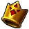
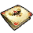

Link makes his way to Death Mountain by passing through Kakariko Village and begins his climb up. In the middle of the mountain Link found the home of the Gorons, people who primarily consume rock. Link would soon find the leader of the Gorons, Darunia, who is in an understandably bad mood from starving as the cave the Gorons tend to get their best rocks out of has been blocked closed and the Goron's Ruby stolen, extinguishing the area of its light of fire. After Link learns of this he goes all the way back to his home in Kokiri Forest and past the Lost Woods, where he meets up with Saria once again and she teaches Link her song on ocarina. Link then takes this new song he's learned back ot Darunia to make him gleeful once again. As a reward Link obtains the Goron's Bracelet, allowing him to pick up heavy objects. With this newfound power he opens the entrance to Dodongo's Cave using a bomb plant and then ventures inside. What lied for him inside was a dungeon of a similar caliber to the one he found inside of the Great Deku Tree, once again gaining items to help him in his quest: a bomb bag, allowing him to place his own bombs wherever instead of relying on the bomb plants. After defeating King Dodongo, bringing peace to the cavern again, he is then given the Goron Ruby by Darunia and is told to go to the very top of the mountain. On the top of Death Mountain was a Great Fairy who gifts Link the power of magic, allowing him to charge up his sword for a deadly spin attack.
| PICTURE | NAME | DESCRIPTION |
|---|---|---|
|  | Goron's Bracelet | Allows young Link to pick up heavier objects |
|
Weird Egg | Egg Malon gives Link |
|
Cucco | Cucco used to wake Talon |
|  | Zelda's Letter | Letter signed by Zelda for permission to climb Death Mountain |
|
Bomb Bag | Allows Link to carry bombs |
|
Goron Ruby | Goron Spiritual Stone |
|
Magic | Allows Link to charge and use magic |